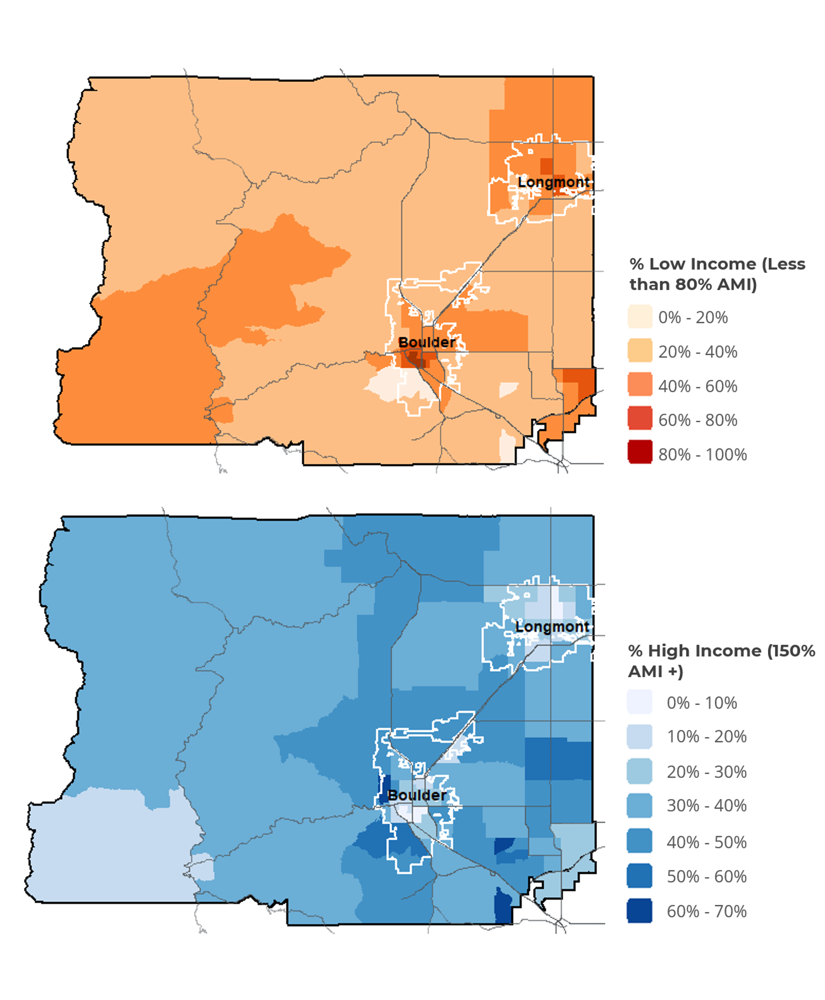
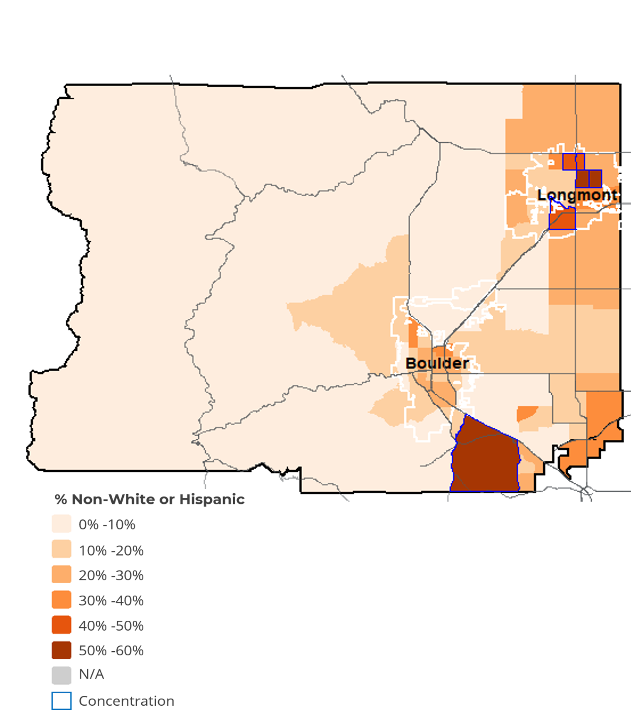

Project Context
This analysis was produced as part of a Consolidated Plan and fair housing assessment for the Boulder HOME Consortium, which includes the City of Boulder, City of Longmont, and Broomfield County. Maps were produced using census tract-level ACS data merged with locally compiled income, race/ethnicity, and lending datasets.
Spatial layers include primary and secondary roads from TIGER/Line shapefiles, municipal place boundaries, and county outlines. Blue outlines on maps indicate HUD-defined areas of racial or ethnic minority concentration (RECAP thresholds).
Maps
Income Distribution by Census Tract
Tract-level share of households earning below 80% of Area Median Income (low income, orange) and above 150% AMI (high income, blue). Downtown Boulder tracts show the highest concentration of low-income households, while affluent tracts cluster in the foothills and eastern Boulder suburbs.

Racial and Ethnic Composition by Census Tract
Share of residents identifying as non-White or Hispanic by tract. Longmont shows notably higher concentrations of non-White and Hispanic residents, with several tracts exceeding 50%. Blue outlines indicate tracts meeting HUD minority concentration thresholds for AFFH analysis.

Data & Methods
Census tracts, Boulder and Broomfield counties. TIGER/Line shapefiles (2022).
ACS 5-year estimates. Households classified by share below 80% AMI and above 150% AMI.
ACS 5-year estimates. Non-White or Hispanic share per tract. RECAP thresholds applied per HUD guidance.
R · tmap · sf · tidyverse · RColorBrewer · TIGER/Line shapefiles.
Produced for Boulder HOME Consortium Consolidated Plan and AFFH assessment.